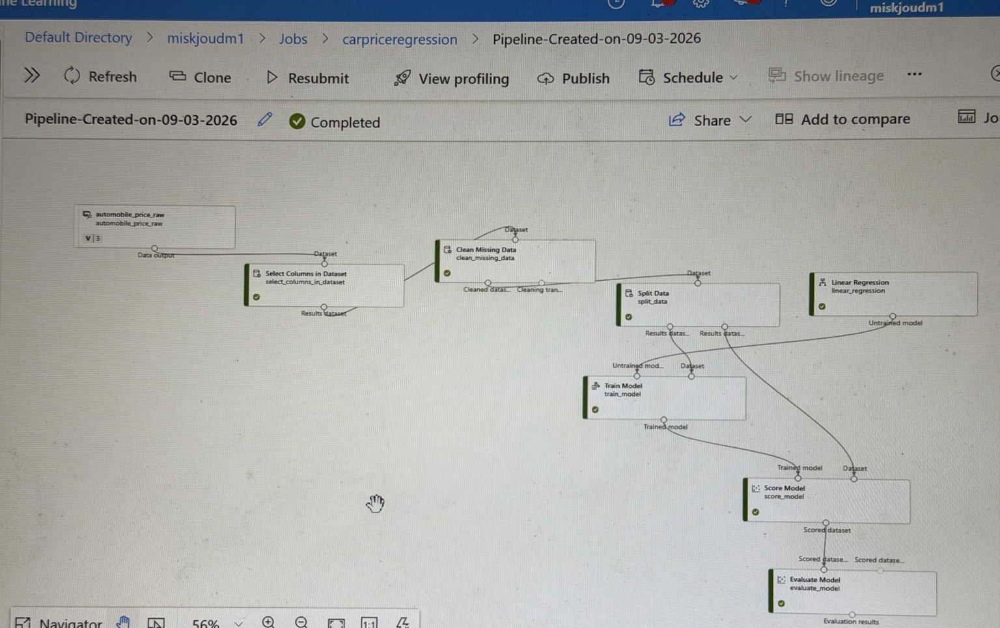

FLUTTER · HCI
01 / MOBILE
Madar
A smart nursery management app connecting teachers, parents, and admins through attendance, bus tracking, points, notifications, and daily updates.
I’m Joud Mutlaq, a Computer Science student building practical projects across AI, machine learning, computer vision, and software development.
Real projects · real demos · real process
A smart nursery management app connecting teachers, parents, and admins through attendance, bus tracking, points, notifications, and daily updates.

An image-classification prototype that recognizes Pokémon cards from photos using a CNN and returns key card information such as name, set, rarity, type, and HP.
An image-classification project using Azure Custom Vision to distinguish between car and non-car images, with a simple Streamlit demo.
A machine learning regression project built in Azure Machine Learning Designer to predict automobile prices using Linear Regression.
From raw automobile data to a trained and evaluated regression model — presented as a visual technical walkthrough rather than a fake “live demo”.

Pipeline stages: dataset selection → missing-data cleaning → split → train Linear Regression → score → evaluate. The model was successfully trained and evaluated in Azure ML Designer.